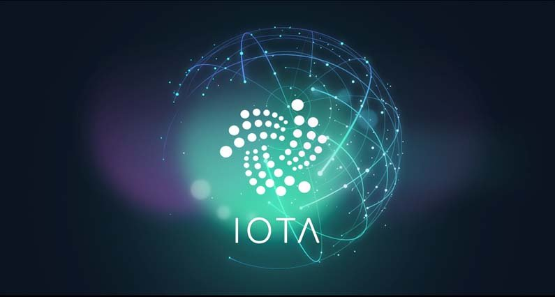
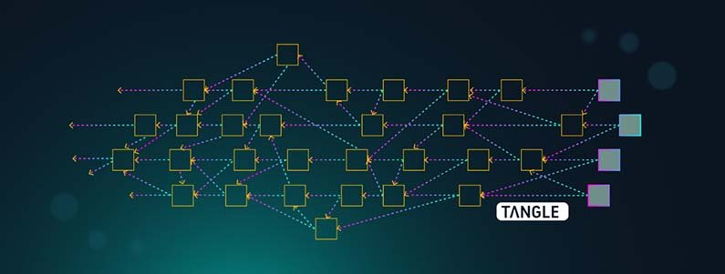
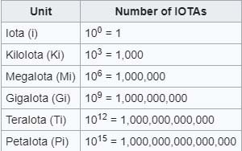
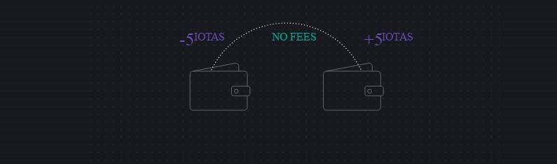

Mi az az IOTA? Útmutató kezdőknek
IOTA egy forradalmian új, következő generációs nyilvános elosztott főkönyv amely az egyedi „Tangle” technológiát használja. Tangle egy új adat struktúra amely a Directed Acyclic Graph-ra van alapozva. Mint ilyen nincsen blokkja, lánca vagy éppen bányásza. Ennek a radikálisan új struktúrának köszönhetően IOTA-ban a dolgok jelentősen másképp működnek, mint más blokklánc technológiát alkalmazó kriptopénzekben.
Mi az az IOTA?
IOTA egy 2015-ben indított nyílt forráskódú elosztott főkönyv protokoll amely túllép a blokkláncon a legfőbb újításával a Tangle-el. IOTA (Internet of Things Application) egy olyan új technológia amely megkönnyíti a tranzakciókat az úgynevezett Internet of Things eszközök között.
Az Internet of Things (IoT) az internet általi kapcsolatot jelenti a mindennapi tárgyakba beépített eszközökben (Okos hűtő, okos ébresztőóra), ezáltal engedélyezve, hogy adatot küldjenek és fogadjanak.
IOTA egyedülállóan díjtalan tranzakciókkal dolgozik, és nincs megkötve mennyi tranzakciót képes elvégezni másodpercenként. Nincsenek bővíthetőségi problémái, mivel minél többen használják a rendszert annál gyorsabb lesz. Továbbá hagyományos blokklánc felépítésekkel ellentétben IOTA nem tesz különbséget a felhasználók és a bányászok között. Tranzakciók megerősítése egy alapvető feladata mindenkinek aki használja a rendszert, ezáltal elkerülve a centralizáltságot.
IOTA fókuszpontja, hogy a gépet géphez (machine-to-machine) gazdaság szerves része legyen.
Technológia
Mivel IOTA terve, hogy több milliárd tranzakciós csomópont legyen a hálózatán mikor a rendszer teljesen ki lesz építve, a tervezőknek egy olyan rendszert kellett megalkotniuk ahol a feldolgozási teljesítmény nő ahogy a hálózat bővül.
E célból tervezték meg a Tangle rendszert. A Tangle rendszerben minden eszköz amely egy új tranzakciót indít, két előtte lévő tranzakciót meg kell, hogy erősítsen. Minden tranzakció hozzá van kapcsolva az előző tranzakciókhoz amelyet megerősített, és idővel hozzá lesz kötve a jövőbeli tranzakciókhoz amelyek azt meg fogják erősíteni. Ez megoldja a bővíthetőségi problémát mivel a hálózat nem támaszkodik egy központi blokkláncra.
Minden új eszköz a hálózaton hozzájárul a teljesítményével a hálózathoz amikor az elindít egy tranzakciót.
Ez a hitelesítés a két előző tranzakcióról biztosítja, hogy az egész hálózat megegyezik a megerősített tranzakciók jelenlegi állapotáról. Ez különféle egyedi funkciókat tesz lehetővé amelyek csak IOTA-ban láthatók.
A Tangle hálózat megszünteti blokk bányászás szükségességét, mivel az összes IOTA érme kibocsátásra került a hálózat létrehozásánál.
IOTA készlet
Fix 2,779,530,283,277,761 egység IOTA-t bocsátottak ki a megalapításkor. Bányászok nélkül a rendszernek nincs természetes módja az érmék elosztására, tehát IOTA-t eredetileg egy ICO-n (Initial Coin Offering) osztották szét. Ez az ICO $584,000-t gyűjtött az IOTA alapítványnak, a német szervezetnek amely IOTA fejlesztéséért és vezetéséért felelős. Mivel ilyen rengeted IOTA létezik ezért a váltó és kereskedelmi weboldalak, valamint Coinmarketcap is MIOTA egységként kezeli ami. 1 MIOTA az egyenlő 1,000,000 IOTA-val.
IOTA teljes készlete hasonló Bitcoin legkisebb egységének a satishi-nak a számához. Összesen 2,099,999,997,690,000 satoshi van, egy satoshi 0.00000001 Bitcoin. Bitcoin-nal ellentétben IOTA nem használ törteket csak egész számokat. Erre azért volt szükség, hogy elkerüljék a kerekítési hibákat amely egy rosszul megtervezett szoftver esetében problémákat okozna.
Zéró tranzakciós díj
Mivel a tranzakció indításakor számítógépes erőforrással hozzájárulsz a hálózathoz, a hálózat használati díja csak annyi mint az elektromos áram ami szükséges a két tranzakció megerősítéséhez. A Tangle lehetővé teszi, hogy IOTA díjmentesen működjön, amely azt jelenti, hogy a hálózat még jobban decentralizált mint egy blokklánc rendszer. Blokklánccal, a hálózat szét van osztva a bányászok között. A Tangle rendszerben a hálózat minden résztvevő ragja között van szétosztva.
A díjtalan tranzakciók kritikus fontosságúak IOTA küldetését tekintve. Ezek az IoT eszközök gyakori utalásokat fognak végezni, centek töredékéért. Bármilyen díjfelszámolás ilyen alacsony tranzakciókon megvalósíthatatlanná tenné az egészet. Ahhoz hogy IOTA elengedhetetlen részese legyen a gépet géphez gazdaságnak az IOTA tranzakciók ingyenes kell, hogy legyen.
Aggályok
A blokklánc technológia sebezhető ha az egyik fél rendelkezik a hálózat számítógépes erőforrások 51%-ával. Ilyenkor elméletben lehetséges, hogy valaki hamis tranzakciókat hozzon létre és erősítsen meg. Mivel IOTA nem blokkláncot hanem Tangle-t használ ezért elméletben már 34%-nál sebezhetővé válik.
IOTA korai szakaszában a legsebezhetőbb egy ilyen támadás ellen. IOTA jelenleg egy az úgynevezett Coordinator-ra támaszkodik, hogy megvédje a hálózatot ezen támadások ellen. Ez a Coordinator ellenőrző pontként szolgál az érvényes tranzakciókhoz.
A múltban előfordult, hogy a Coordinator nem működött, amely miatt a hivatalos IOTA tárca nem működött egy pár napig, amely miatt sokan kritizálták IOTA centralizáltságát. A fejlesztők állítása szerint, amint a hálózat elég nagyra nő, a Coordinator el lesz távolítva, ezáltal decentralizálva a hálózatot.
2017 Augusztusában egy MIT csapat közzétett egy cikket amiben IOTA-t vizsgálták. Az IOTA fejlesztői csapata saját maga fejlesztette ki a kriptográfiai rendszerét a nulláról. Ebben a cikkben az MIT csapat közzétett egy hibát amit találtak ebben a rendszerben. Az IOTA csapat azóta javította a hibát, de saját kriptográfiai rendszert létrehozni nagyon veszélyes, mert ha nincsenek hosszú időn keresztül tesztelve akkor hatalmas hibákat tartalmazhatnak.
IOTA vásárlás
Legegyszerűbb módja ha először Bitcoin-t vagy Ethereum-ot vásárolsz Coinbase vagy BitPanda-án. Ezután többek között Binance vagy Bitfinex segítségével cserélheted Bitcoin-t IOTA-ra. Bitcoin vagy Ethereum beszerzése után Binance és Bitfinex oldalon részletes útmutatót találsz hogyan válthatod egyik kriptovalutádat egy másikra.
IOTA tárolás
IOTA tárcák kicsit kezdetlegesebb formában léteznek egyelőre.
Hivatalos IOTA tárca letöltése után kell egy úgynevezett "seed"-et generálni. Ez a seed egy 81 karakterből álló felhasználónév és jelszó kombináció. Ezzel a seed-el férhetsz hozzá az IOTA tárcádhoz. Fontos, hogy tartsuk titokban ezt a seed-et, ne osszuk meg senkivel.
IOTA seed A-Z és 9-es számot tartalmazhat. Tehát csak nagy betűket és a 9-es számot. Ezt a seed-et generálhatod Keepass, vagy LastPass nevű programok segítségével.
IOTA tárca telepítésnél kiválaszthatod, hogy Light vagy Full node módban telepítsed. Light node csatlakozni fog egy távoli csomóponthoz, míg Full node letölti a teljes tangle hálózatot a gépedre.
Végszó
Az IOTA projekt sok izgalmas dolgot kínál. Ha a fejlesztők csak egy részét tudják hozni annak amire törekszenek, a hatásuk óriási lenne. De még mindig nagyon korai szakaszban vannak és IOTA ismeretlen vizeken evez. Forradalmi ötletei vannak az IOTA csapatnak, de még bizonyítatlan a technológia. A csapat sokat ígér, az idő majd megmondja mennyit tudnak ezek közül megtartani.


2018. Január 16.